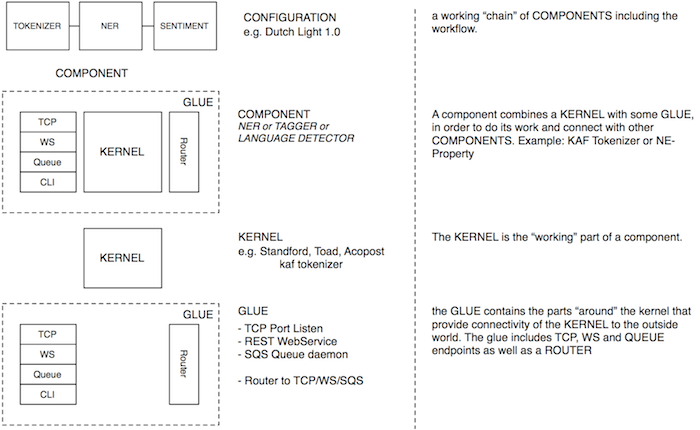

Architecture Overview

Lingo in short
Each COMPONENT consists of a KERNEL that actually does all the work. The KERNEL can be written in Java, Perl, Python or any language that suits the tasks that needs to be completed.
Each KERNEL is provided with some padding and GLUE to ease the execution, installation and integration of the KERNEL with other KERNELS. The GLUE consists of a Ruby padding which takes care of:
- Installation using the “gem” command. e.g.
gem install VU-polarity-tagger-basic_EN - A command line interface accepting input on STDIN and outputting on STDOUT
- A standardized command line “help” command (under development)
- Dependecy checking and installation using the Gemspec and Gemfile
Throughout the documentation you will consistently see a certain OpeNER lingo. The list below provides and overview of the OpeNER lingo. We try and make it a habit to refer to LINGO words in CAPITALS.
CONFIGURATION
A working “chain” of COMPONENTS including the workflow. Example:
No example provided (yet).
COMPONENT
A part of the “chain” in a CONFIGURATION. A component combines a KERNEL with some GLUE, in order to do its work and connect with other COMPONENTS.
Example:
KAF Tokenizer or Polarity Tagger
KERNEL
The “working part” of a component.
Example:
The actual “tagger” in the VU Polarity Tagger.
GLUE
The parts “around” the kernel that provide connectivity of the KERNEL to the outside world. The glue includes TCP, WS and QUEUE endpoints as well as a ROUTER.
Example:
No example provided (yet).
TCP
A TCP Server module, which is part of the GLUE of a COMPONENT. The TCP server module makes that provides a way to access the KERNEL by sending messages to a TCP port.
Example of using TCP server:
telnet localhost 1234 < my_input.kaf > my_output.kaf
WS
A WS (WEBSERVICE) module, which is part of the GLUE of a COMPONENT. The WS module makes that the KERNEL can be accessed by sending web-requests to a uri-endpoint.
Example of using WEBSERVICE:
curl -F kaf=<my_input.kaf http://localhost:1234 > my_output.kaf
QUEUE
A QUEUE module, which is part of the GLUE of a COMPONENT. The QUEUE module is a daemon process that reads jobs out of a job queue. (Amazon SQS)
Example:
Currently no example given
CLI
A CLI (COMMAND LINE INTERFACE) module, which is part of the GLUE of a COMPONENT. The CLI module enables users to access the KERNEL from a command line.
Example:
cat my_input.kaf > my_kaf_tokenizer > my_output.kaf
ROUTER
A ROUTER module, which is part of the GLUE of a COMPONENT. The ROUTER module connects to the other GLUE components and makes it possible to “forward” a response of the KERNEL to another COMPONENT based on a route file. Note: route file specifications still have to be developed
Example:
No example provided